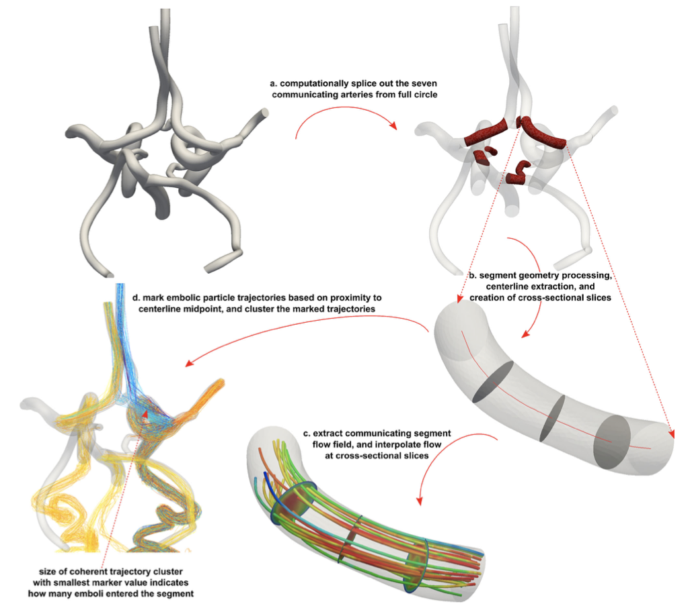

Graduate Fluid Dynamics
Parameters Influencing Fluid Particle Interactions in Anatomical Flows: A Review

Investigated the area of research on the particle-fluid two-way coupling, specifically the Maxey-Riley equation, for motion of inertial spherical particles in ambient fluid flow.
Described a number of computational studies and one experimental study conducted to characterise embolus transport through the human vasculature.